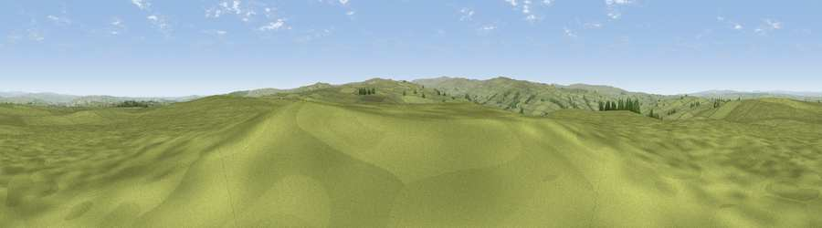

Lough Hill
#11828 in England · top 28% of its area beats it · near AllendaleThe view, rendered

A 360° render of this exact spot computed from the terrain model, tree cover and land cover — summer colours, afternoon light, calibrated against photographs of famous viewpoints. Real trees, hedges and buildings will differ in detail.
The panorama
Grey silhouette: terrain skyline in each direction (720 bearings, Earth curvature and refraction included). Dashed green: skyline with trees (+15 m) and buildings (+8 m) as obstacles. Blue strip: how far the ground is visible on each bearing.
Where the view opens
Wedge length = distance to the farthest visible ground on that bearing (vegetation-aware). Rings at 10, 25 and 50 km.
What fills the view
96% grassland · 3% woodland ·
Angular shares of the visible panorama (visual magnitude), not map area. Landscape diversity 0.09 (0–1 Shannon).
Key numbers
More beautiful places nearby
The staircase of upgrades: each row has a higher view potential than everything closer. Driving times are estimates from straight-line distance, calibrated against real road routing — check an actual route before setting out.
| Place | Direction | Drive | Score |
|---|---|---|---|
| Catton Beacon | WNW · 3 km | ~8 min | 64.6 |
| Viewpoint near Allendale | S · 4 km | ~9 min | 65.2 |
| Viewpoint near Allendale | S · 6 km | ~12 min | 66.1 |
| Watson's Pike | SE · 6 km | ~13 min | 68.3 |
| Viewpoint near Allendale | SW · 7 km | ~14 min | 70.0 |
| Viewpoint near Fourstones | NNE · 12 km | ~22 min | 71.4 |
| Viewpoint near Allenheads | SSW · 13 km | ~24 min | 74.6 |
| Grey Nag | WSW · 21 km | ~35 min | 75.7 |
54.91147, -2.23230 · source: osm peak · position refined by local search. Computed location — check access rights before visiting.